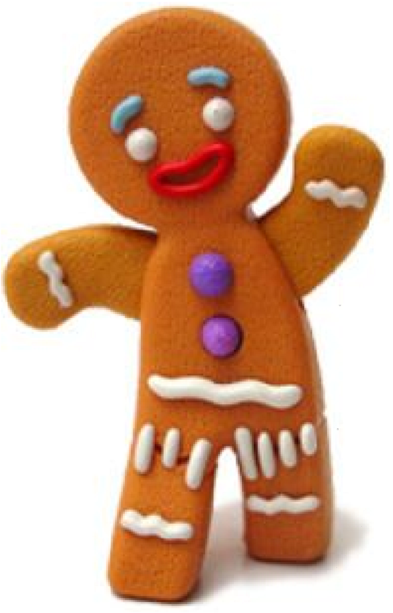

The rotateY() method rotates an element around its Y-axis at a given degree.
When the gingerbread man was done, the little old woman opened the oven door, but before she could take him out, the gingerbread man jumped up and ran through the kitchen and out of the cottage shouting, "Don't eat me!" The little old woman ran after the gingerbread man. "Stop," she yelled. But the gingerbread man ran even faster, chanting, "Run, run as fast as you can. You can't catch me, I'm the gingerbread man."
Book owned by Benjamin Pen

Note: Internet Explorer 9 (and earlier versions) does not support the rotateY() method.